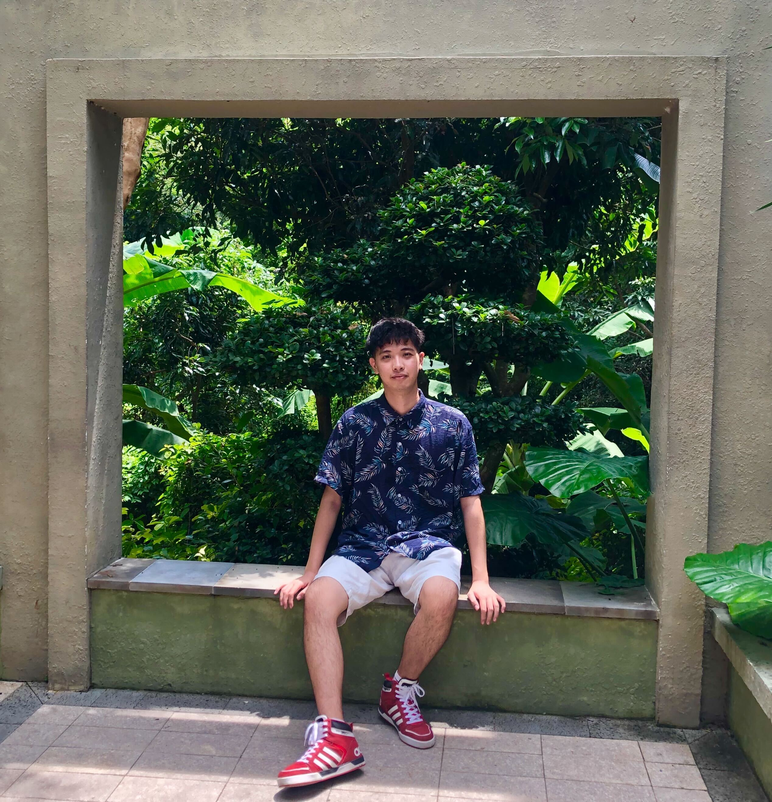
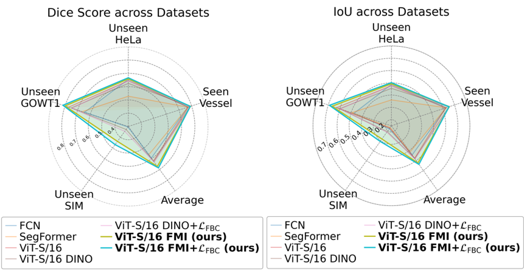
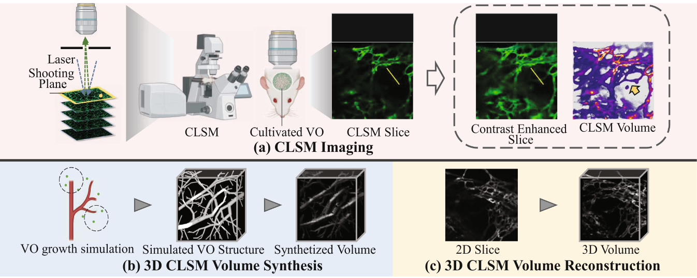
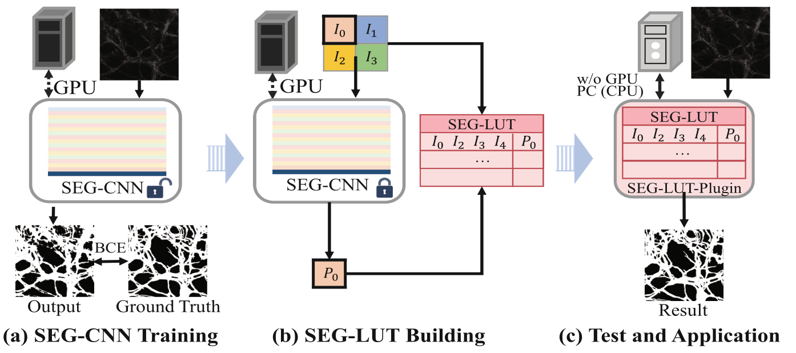
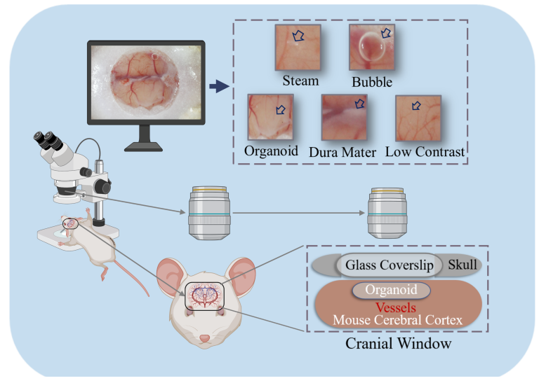

Yunheng Wu (吴 运恒)博士学生
智能系统专攻, |
 |
关于我
我是名古屋大学情报学研究科智能系统专攻的博士研究生，就读于名古屋大学，师从森健策教授。此前，我于2019年在中国东北大学计算机科学与工程学院获工学学士学位，于2023年在名古屋大学情报学研究科获信息学硕士学位。
我的研究聚焦于生物医学图像处理。
若您希望就计算机视觉相关话题与我交流，欢迎通过邮件与我联系！
研究关键词
最新消息
-
[03/2026] 预印本论文「WSI-INR: Implicit Neural Representations for Lesion Segmentation in Whole-Slide Images」已发布！
-
[09/2025] 我们有两篇论文被 MICCAI 2025 Workshop 接收。
-
[09/2025] 获 MICCAI 2025 杰出审稿人荣誉提名（Honorable Mention for Outstanding Reviewer）。
-
[02/2025] 文章「SELMA3D challenge: Self-supervised learning for 3D light-sheet microscopy image segmentation」发表！
代表性发表论文
|
 |
International Conference on Medical Image Computing and Computer-Assisted Intervention, MICCAI Workshop, 2025MICCAI WS Yuheng Wu, Liangyi Wang, Zhongyang Lu, Masahiro Oda, Yuichiro Hayashi, Shuntaro Kawamura, Takanori Takebe, Kensaku Mori [代码] 关键词：荧光显微成像；图像分割；对比学习；自监督预训练 |
|
 |
International Conference on Medical Image Computing and Computer-Assisted Intervention, MICCAI Workshop, 2024MICCAI WS Yuheng Wu, Martin J. Menten, Linus Kreitner, Shuntaro Kawamura, Masahiro Oda, Yuichiro Hayashi, Takanori Takebe,Daniel Rueckert, and Kensaku Mori [代码与数据集] 关键词：共聚焦显微体数据；三维血管仿真与合成；三维体数据重建 |
|
 |
International Conference on Medical Image Computing and Computer-Assisted Intervention, MICCAI Workshop, 2024MICCAI WS Yuheng Wu, Yunheng Wu1(B), Jiazhen Pan, Shuntaro Kawamura, Masahiro Oda, Yuichiro Hayashi, Takanori Takebe, Daniel Rueckert and Kensaku Mori [代码与数据集] 关键词：显微图像；图像分割；查找表 |
|
 |
Conference on Computer Vision and Pattern Recognition (CVPR) Workshop, 2022CVPR WS Yuheng Wu, Masahiro Oda, Yuichiro Hayashi, Takanori Takebe, Shogo Nagata, Cheng Wang, Kensaku Mori 关键词：颅窗；大视场光学显微图像；血管分割 |
其他发表论文
-
WSI-INR: Implicit Neural Representations for Lesion Segmentation in Whole-Slide Images Preprint
Yunheng Wu, Wenqi Huang, Liangyi Wang, Masahiro Oda, Yuichiro Hayashi, Daniel Rueckert, Kensaku Mori
arXiv preprint arXiv:2603.03749
-
Modeling antithymocyte globulin-induced microvasculopathy using human iPSC-derived vascularized liver organoids IF 10.6
Shuntaro Kawamura, Yosuke Yoneyama, Norikazu Saiki, Yunheng Wu, Chiharu Moriya, Rio Ohmura, Mari Maezawa, Yoshihiro Shimada, Yicheng Wang, Kensaku Mori, Noriki Okada, Yasuharu Onishi, Yukihiro Sanada, Yuta Hirata, Yasunaru Sakuma, Takanori Takebe
Cell Reports Medicine, 2025, 6(11).
-
Spiking MU-Net: Toward Low-Power and Efficient Microscopic Image Segmentation
Liangyi Wang, Yunheng Wu , Masahiro Oda, Yuichiro Hayashi, Kensaku Mori
International Workshop on Efficient Medical Artificial Intelligence. Cham: Springer Nature Switzerland, 2025: 163-173.Workshop
-
SELMA3D challenge: Self-supervised learning for 3D light-sheet microscopy image segmentation Preprint
Ying Chen, Rami Al-Maskari, Izabela Horvath, Mayar Ali, Luciano Hoher, Kaiyuan Yang, Zengming Lin, Zhiwei Zhai, Mengzhe Shen, Dejin Xun, Yi Wang, Tony Xu, Maged Goubran, Yunheng Wu, Kensaku Mori, Johannes C Paetzold, Ali Erturk
arXiv preprint arXiv:2501.03880
-
In toto biological framework: Modeling interconnectedness during human development IF 10.7
Yosuke Yoneyama, Yunheng Wu, Kensaku Mori, Takanori Takebe
Developmental Cell, Volume 60, Issue 1, 8 - 20, January 06, 2025
-
Complement factor D targeting protects endotheliopathy in organoid and monkey models of COVID-19 IF 19.8
Eri Kawakami, Norikazu Saiki, Yosuke Yoneyama, Chiharu Moriya, Mari Maezawa, Shuntaro Kawamura, Akiko Kinebuchi, Tamaki Kono, Masaaki Funata, Ayaka Sakoda, Shigeru Kondo, Takeshi Ebihara, Hisatake Matsumoto, Yuki Togami, Hiroshi Ogura, Fuminori Sugihara, Daisuke Okuzaki, Takashi Kojima, Sayaka Deguchi, Sebastien Vallee, Susan McQuade, Rizwana Islam, Madhusudan Natarajan, Hirohito Ishigaki, Misako Nakayama, Cong Thanh Nguyen, Yoshinori Kitagawa, Yunheng Wu, Kensaku Mori, Takayuki Hishiki, Tomohiko Takasaki, Yasushi Itoh, Kazuo Takayama, Yasunori Nio, Takanori Takebe
Cell Stem Cell, Volume 30, issue 10, p1315-1330.E10, October 05, 2023
-
Thrombosis region extraction and quantitative analysis in confocal laser scanning microscopic image sequence in in-vivo imaging
Yunheng Wu, Masahiro Oda, Yuichiro Hayashi, Shuntaro Kawamura, Takanori Takebe, Kensaku Mori.
In Medical Imaging 2023: Biomedical Applications in Molecular, Structural, and Functional Imaging (Vol. 12468, pp. 71-77). SPIE.
-
A 3D Multi-scale Virtual Adversarial Network for False Positive Reduction in Pulmonary Nodule Detection
Yunheng Wu, Yuxuan Pang, Peng Cao.
Proceedings of the 2019 3rd ICIAI, 2019
教育背景
- 日本名古屋大学 情报学研究科 智能系统专攻（2023年4月 - 至今）
博士课程
导师： 森健策 教授
- 日本名古屋大学 情报学研究科 智能系统专攻（2021年4月 - 2023年3月）
硕士研究生（学位：信息学硕士）
导师： 森健策 教授
- 日本名古屋大学 情报学研究科（2020年4月 - 2021年3月）
研究生（非学位课程）
导师： 森健策 教授
- 韩国庆熙大学 电子工程系（2017年8月 - 2018年1月）
交换生（非学位课程）
- 中国东北大学 计算机科学与工程学院 本科（2015年10月 - 2019年6月）
本科 （学位：工学学士）
经历
- UCL 医学图像计算暑期学校（MedICSS）, 伦敦，英国，2024年7月
暑期学校学员
项目 5：基于深度学习的磁共振图像去噪
- 医学人工智能实验室（The Lab of AI in Medicine）, 慕尼黑工业大学医学人工智能与信息研究所 （Institute of AI and Informatics in Medicine, Technical University of Munich），慕尼黑，德国，2023年8月 - 2023年11月
访问研究学生
导师： Daniel Rueckert 教授
- 森研究室（Mori Laboratory），名古屋大学情报学研究科，日本名古屋，2021年4月 - 2023年3月
研究助理（兼职）
导师： 森健策 教授
- 东北大学信息与信号处理研究所，中国沈阳，2018年1月 - 2018年7月
研究学生
导师：栾峰 教授
- 东北大学医学图像计算重点实验室，中国沈阳，2018年1月 - 2019年6月
研究学生
导师：曹 鹏 教授
项目经历
- JST Moonshot 项目目标3：人类与AI机器人共同进化以拓展科学前沿，2021年4月 - 至今
学生成员
项目总负责人（PM）: Kanako Harada 教授
指导负责人（PI）: Kensaku Mori 教授
合作负责人（PI）： Takanori Takebe 教授
- 国家级大学生创新创业训练计划项目，2018年1月 - 2019年6月
项目负责人
奖学金与资助
- 医学与信息科学融合国际联合项目（CIBoG）, 2021年4月 - 至今
CIBoG第三期生（信息学研究科与医学研究科联合项目）
- 名古屋大学学科融合博士前沿奖学金，2023年4月 - 2024年3月
信息/AI领域
- 日本学术振兴会（JSPS）特别研究员（DC2），2024年4月 - 至今
其他获奖情况
MICCAI 2025 杰出审稿人荣誉提名，2025
东华教育文化交流财团奖学金，2022-2023
JEES Softbank AI 人才培养奖学金，2021-2022
东北大学优秀学生奖学金，2018-2019
东北大学优秀学业个人奖，2017-2018
东北大学优秀学生奖学金，2017-2018
其他经历
Journal of Biomedical and Health Informatics (JBHI) 审稿人
Health Information Science and Systems 审稿人
AXIES2023 学术信息环境与战略交流年会
第五届医学与信息科学融合国际联合项目（CIBoG）联合研讨会委员
MICCAI（医学图像计算与计算机辅助手术国际会议）审稿人
CVPR（IEEE/CVF计算机视觉与模式识别会议）审稿人
ICCV（国际计算机视觉大会）审稿人
合作研究者
东京大学医科学研究所 博士后研究员（IMSUT）